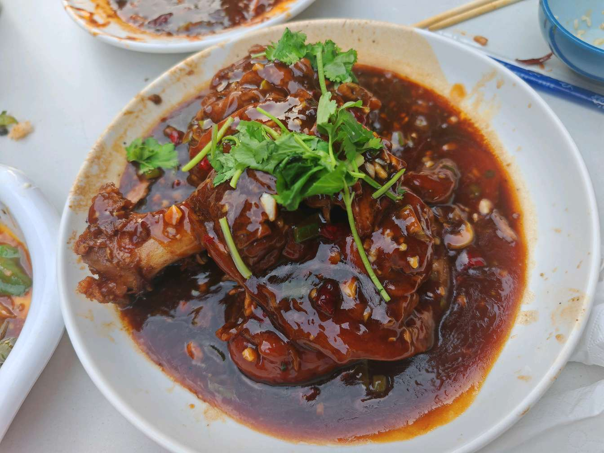
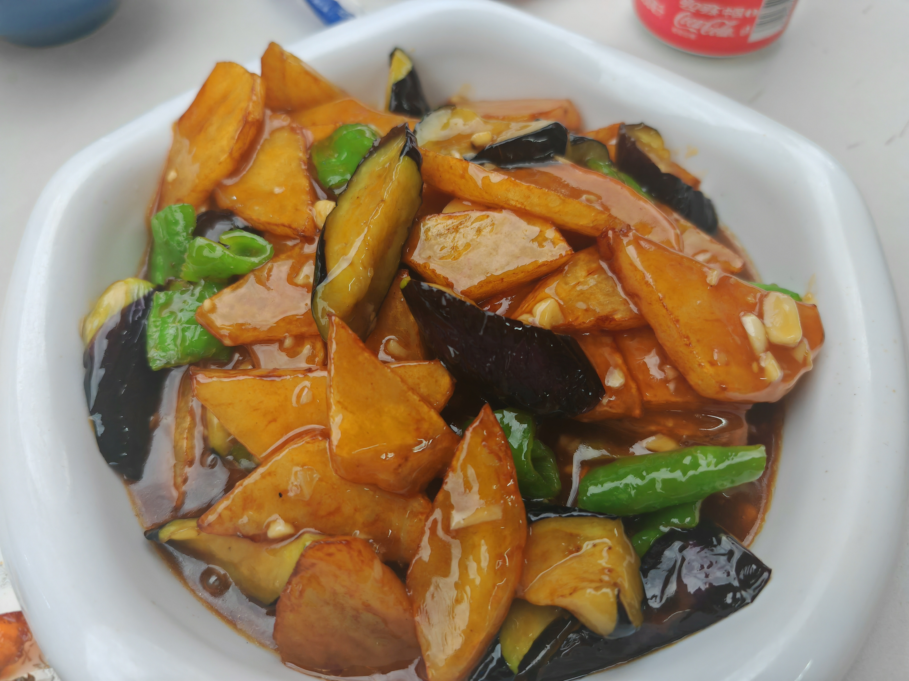

欢迎来到'食堂还有饭吗'的博客！
2024年
6月
22日
美食栏目

猪脚
猪脚，来自南大和园东北炖菜！无敌好吃！大姨人也是无敌好！肥而不腻，特别下饭！非常非常推荐！
 石锅牛蛙
石锅牛蛙，来自桂满陇，一家非常好吃的店，牛蛙的味道极好，可能略油，店里其他的菜也特别特别好吃！
石锅牛蛙
石锅牛蛙，来自桂满陇，一家非常好吃的店，牛蛙的味道极好，可能略油，店里其他的菜也特别特别好吃！

地三鲜
地三鲜，来自南大和园东北菜，也是大姨的绝活好菜之一，十分正宗，物美价廉！特别推荐！
Java
JavaSE -> JavaWeb -> SSM -> Linux -> 分布式
自学Java怎么学，找对方向很关键！在这里为大家分享最全的架构师级Java全栈学习路线及知识清单！
包含JavaSE基础，JavaWeb，SSM框架，Linux运维，分布式与微服务，大数据开发~
本人研究人生一枚，自学Java中，后期会逐步分享清单中所有技术与知识的详细介绍文章，收藏关注不迷路~
心中有方向，行动才有力量，如果你也想自学Java，欢迎一起交流，共同进步~
Python
Python基础 -> 并发 -> 网络编程-> 爬虫 -> 数据分析
每个人对技术的认知都不尽相同，在我个人看来，你学完以下这些东西就可以算是入门了，为什么？因为以下这些东西是Python进阶各个方向都必备的基础知识，你进阶去学爬虫或者web开发等方向，你都得先学会它们。
因为知识点放在一起比较多，我把它们稍加区分成基础和高级编程两块，对于每一个自学的人，按照这个体系去打好基础，你未来的路会走得更稳重。
html
html -> css -> js -> node.js -> vue
一旦你学习了HTML基础，至少要制作5个HTML网页。我建议你随便找一个网站，比如看看Github的档案页或者Twitter的登录页。
然后把焦点放在恰当地组织内容上。出来的东西可能会很难看，但是暂时别担心，把你的关注点放在恰当的结构上。
html
html -> css -> js -> node.js -> vue
一旦你学习了HTML基础，至少要制作5个HTML网页。我建议你随便找一个网站，比如看看Github的档案页或者Twitter的登录页。
然后把焦点放在恰当地组织内容上。出来的东西可能会很难看，但是暂时别担心，把你的关注点放在恰当的结构上。
html
html -> css -> js -> node.js -> vue
一旦你学习了HTML基础，至少要制作5个HTML网页。我建议你随便找一个网站，比如看看Github的档案页或者Twitter的登录页。
然后把焦点放在恰当地组织内容上。出来的东西可能会很难看，但是暂时别担心，把你的关注点放在恰当的结构上。